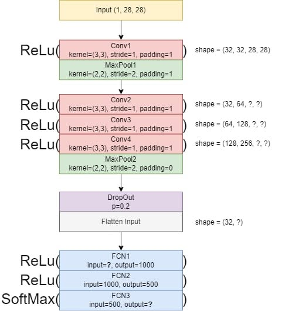

Laboratory Activity 6 - CNN Architecture Diagram to PyTorch#
Laboratory Activity 6
Instruction: Convert the following CNN architecture diagram into a PyTorch CNN Architecture.

Diagram summary (transcribed from the provided image):
Block |
Layer(s) |
Parameters |
|---|---|---|
Input |
— |
|
Block 1 |
Conv1 → ReLU → MaxPool1 |
Conv: kernel=(3,3), stride=1, padding=1 | Pool: kernel=(2,2), stride=2, padding=1 |
Block 2 |
Conv2 → ReLU |
kernel=(3,3), stride=1, padding=1 |
Block 3 |
Conv3 → ReLU |
kernel=(3,3), stride=1, padding=1 |
Block 4 |
Conv4 → ReLU → MaxPool2 |
Conv: kernel=(3,3), stride=1, padding=1 | Pool: kernel=(2,2), stride=2, padding=0 |
Regularize |
Dropout → Flatten |
p=0.2 |
Block 5 |
FCN1 → ReLU |
output=1000 |
Block 6 |
FCN2 → ReLU |
input=1000, output=500 |
Block 7 |
FCN3 → SoftMax |
input=500, output=? (num classes) |
My Approach#
Before writing a single line of PyTorch, I want to fully pin down every number in this diagram, because a couple of things in it are ambiguous or left as “?” for me to derive.
1. Working out the channel counts.
The diagram doesn’t explicitly state each convolution’s in_channels/out_channels, but they can be read off from context:
The input has 1 channel (grayscale,
28×28).Conv1’s shape annotation
(32, 32, 28, 28)tells me its output has 32 channels →Conv1: in=1, out=32.From there, the diagram’s channel counts simply double at each subsequent conv layer (a very common CNN design pattern):
Conv2: in=32, out=64,Conv3: in=64, out=128,Conv4: in=128, out=256.
2. Making sense of the shape annotations. This is the part that needs the most care. Look at the tuples printed next to each block:
Block 1:
(32, 32, 28, 28)Block 2 (Conv2):
(32, 64, ?, ?)Block 3 (Conv3):
(64, 128, ?, ?)Block 4 (Conv4+Pool2):
(128, 256, ?, ?)Flatten:
(32, ?)
If these were all meant to be output tensor shapes in the usual (batch, channels, H, W) PyTorch convention, the first number should stay constant at the batch size (32) all the way down — but it visibly changes to 64 and then 128 for Conv3 and Conv4. That only makes sense if, for the middle two rows, the diagram’s author is actually annotating (in_channels, out_channels, H, W) for that specific conv layer, rather than the output batch shape — i.e. they switched notation partway through to remind the reader what channel transformation each layer performs. The very first block and the Flatten step, on the other hand, are consistent with (batch_size, ..., ...) using an assumed batch size of 32.
Rather than guess and propagate a possibly-wrong number, I resolve this the way I would in practice: compute the real, PyTorch-verified (batch, channels, H, W) shape after every layer myself, using the standard convolution/pooling output-size formula, and use batch_size = 32 consistently throughout (matching the one unambiguous batch-size hint in the diagram, at the Flatten step). I show that derivation below, then confirm it against PyTorch’s actual layer outputs later in the notebook — so the final architecture is faithful to the diagram’s layer parameters (kernels, strides, paddings, channel counts) while being numerically self-consistent, which the diagram’s own labels are not.
3. The output-size formula. For a convolution or pooling layer with kernel size \(K\), stride \(S\), and padding \(P\), applied to an input of spatial size \(H_{in}\):
(and the same formula applies independently to the width, since every kernel/stride/padding here is square). I’ll apply this layer by layer.
4. The final “?”s: FCN1’s input size and FCN3’s output size.
FCN1’s
input=?is just whatever the flattened feature-map size turns out to be after Dropout — I derive that below (256 channels × 7 × 7 = 12544).FCN3’s
output=?is the number of target classes. The filenamequick_draw.pngstrongly suggests this architecture is meant for Google’s Quick, Draw! doodle-classification dataset, which is commonly used in classroom exercises with a small subset of categories. Since the exact number of classes isn’t given, I make it a constructor parameter (num_classes) with a sensible default, so the same class can be reused directly regardless of how many doodle categories the actual training set ends up using.
5. Softmax vs. CrossEntropyLoss — a design note.
The diagram explicitly ends with a SoftMax layer, so I include nn.Softmax(dim=1) in the model to match it exactly. It’s worth flagging why this matters for training, though: PyTorch’s nn.CrossEntropyLoss already applies log_softmax internally, so feeding it a model that also applies softmax would effectively apply softmax twice and give incorrect gradients. Since I’m keeping the softmax layer (to stay faithful to the diagram), the correct pairing for training is nn.NLLLoss applied to the log of the model’s output (mathematically equivalent to log_softmax → NLLLoss, which is exactly what CrossEntropyLoss does under the hood on raw logits). I demonstrate this explicitly in the training-step section so the subtlety doesn’t get lost.
With all of that reasoned out, here’s the plan for the notebook:
Standard imports.
Derive every intermediate tensor shape by hand, with the output-size formula, and collect it into a small table.
Implement the architecture as a
nn.Modulesubclass, matching every layer/parameter from the diagram.Instantiate the model, print its structure and parameter count.
Run a dummy forward pass and print the shape after every single layer, to confirm it matches the hand-derived table exactly.
Demonstrate one correct training step (forward → loss → backward → optimizer step), addressing the Softmax/loss-function subtlety above.
1. Standard Imports#
import torch
import torch.nn as nn
import torch.nn.functional as F
torch.manual_seed(42)
device = torch.device("cuda:0" if torch.cuda.is_available() else "cpu")
print("Using device:", device)
print("torch version:", torch.__version__)
Using device: cpu
torch version: 2.14.0+cu130
2. Deriving the shapes by hand#
I write a small helper that implements the output-size formula from above, then walk through the network layer by layer, exactly as laid out in the diagram. I’m using an assumed batch size of 32 throughout, consistent with the one unambiguous batch-size hint in the diagram (the Flatten step’s shape).
# Standard output-size formula for a 2D conv/pool layer (square kernels).
def conv_output_size(h_in, kernel_size, stride, padding):
return (h_in + 2 * padding - kernel_size) // stride + 1
BATCH_SIZE = 32
H = W = 28 # input spatial size
C = 1 # input channels
shape_log = []
shape_log.append(("Input", BATCH_SIZE, C, H, W))
# ---- Block 1: Conv1 -> ReLU -> MaxPool1 ----
C = 32
shape_log.append(("Conv1 (ReLU)", BATCH_SIZE, C, H, W)) # k=3,s=1,p=1 -> size unchanged
H = W = conv_output_size(H, kernel_size=2, stride=2, padding=1) # MaxPool1: k=2,s=2,p=1
shape_log.append(("MaxPool1", BATCH_SIZE, C, H, W))
# ---- Block 2: Conv2 -> ReLU ----
C = 64
shape_log.append(("Conv2 (ReLU)", BATCH_SIZE, C, H, W)) # k=3,s=1,p=1 -> size unchanged
# ---- Block 3: Conv3 -> ReLU ----
C = 128
shape_log.append(("Conv3 (ReLU)", BATCH_SIZE, C, H, W)) # k=3,s=1,p=1 -> size unchanged
# ---- Block 4: Conv4 -> ReLU -> MaxPool2 ----
C = 256
shape_log.append(("Conv4 (ReLU)", BATCH_SIZE, C, H, W)) # k=3,s=1,p=1 -> size unchanged
H = W = conv_output_size(H, kernel_size=2, stride=2, padding=0) # MaxPool2: k=2,s=2,p=0
shape_log.append(("MaxPool2", BATCH_SIZE, C, H, W))
# ---- Dropout doesn't change shape ----
shape_log.append(("Dropout(p=0.2)", BATCH_SIZE, C, H, W))
# ---- Flatten ----
flat_features = C * H * W
shape_log.append(("Flatten", BATCH_SIZE, flat_features))
print(f"{'Layer':<20s} Shape")
print("-" * 45)
for entry in shape_log:
name, *dims = entry
print(f"{name:<20s} {tuple(dims)}")
print(f"\n=> FCN1's input size (the diagram's '?') = {flat_features}")
Layer Shape
---------------------------------------------
Input (32, 1, 28, 28)
Conv1 (ReLU) (32, 32, 28, 28)
MaxPool1 (32, 32, 15, 15)
Conv2 (ReLU) (32, 64, 15, 15)
Conv3 (ReLU) (32, 128, 15, 15)
Conv4 (ReLU) (32, 256, 15, 15)
MaxPool2 (32, 256, 7, 7)
Dropout(p=0.2) (32, 256, 7, 7)
Flatten (32, 12544)
=> FCN1's input size (the diagram's '?') = 12544
Two things stand out from this derivation:
MaxPool1grows the spatial size relative to plain “no padding” pooling. Withpadding=1on a 2×2/stride-2 pool over a 28×28 input, the formula gives \(\lfloor (28+2-2)/2 \rfloor + 1 = 15\), not the \(14\) you’d get with the more commonpadding=0. This is an unusual (if valid) choice by the diagram, so I keep it exactly as specified —padding=1onMaxPool1— since matching the diagram is the point of this task.FCN1’s input size resolves to256 × 7 × 7 = 12544. This is the value I use fornn.Linear(in_features=..., ...)when buildingFCN1below — it’s not a number I can pick arbitrarily, it’s forced by everything upstream of it.
3. Building the architecture#
Now I translate the diagram directly into a torch.nn.Module. Each layer is named after its label in the diagram (conv1, pool1, fc1, …) so the mapping from picture to code is as literal as possible. num_classes is left as a constructor argument (defaulting to 10) since the diagram doesn’t pin down FCN3’s output size — the architecture works unchanged for however many Quick, Draw!-style categories the eventual training set has.
class QuickDrawCNN(nn.Module):
# CNN architecture converted directly from the provided diagram.
# Input : (batch, 1, 28, 28)
# Output : (batch, num_classes) class probabilities (post-Softmax)
def __init__(self, num_classes: int = 10, dropout_p: float = 0.2):
super().__init__()
# ---- Block 1: Conv1 -> ReLU -> MaxPool1 ----
self.conv1 = nn.Conv2d(in_channels=1, out_channels=32, kernel_size=3, stride=1, padding=1)
self.pool1 = nn.MaxPool2d(kernel_size=2, stride=2, padding=1)
# ---- Block 2: Conv2 -> ReLU ----
self.conv2 = nn.Conv2d(in_channels=32, out_channels=64, kernel_size=3, stride=1, padding=1)
# ---- Block 3: Conv3 -> ReLU ----
self.conv3 = nn.Conv2d(in_channels=64, out_channels=128, kernel_size=3, stride=1, padding=1)
# ---- Block 4: Conv4 -> ReLU -> MaxPool2 ----
self.conv4 = nn.Conv2d(in_channels=128, out_channels=256, kernel_size=3, stride=1, padding=1)
self.pool2 = nn.MaxPool2d(kernel_size=2, stride=2, padding=0)
# ---- Dropout + Flatten ----
self.dropout = nn.Dropout(p=dropout_p)
self.flatten = nn.Flatten()
# ---- Fully connected head ----
flat_features = 256 * 7 * 7 # derived above: 12544
self.fc1 = nn.Linear(in_features=flat_features, out_features=1000)
self.fc2 = nn.Linear(in_features=1000, out_features=500)
self.fc3 = nn.Linear(in_features=500, out_features=num_classes)
self.softmax = nn.Softmax(dim=1)
def forward(self, x):
# Block 1
x = F.relu(self.conv1(x))
x = self.pool1(x)
# Block 2
x = F.relu(self.conv2(x))
# Block 3
x = F.relu(self.conv3(x))
# Block 4
x = F.relu(self.conv4(x))
x = self.pool2(x)
# Dropout + Flatten
x = self.dropout(x)
x = self.flatten(x)
# Fully connected head
x = F.relu(self.fc1(x))
x = F.relu(self.fc2(x))
x = self.fc3(x)
x = self.softmax(x)
return x
4. Instantiate the model and inspect it#
I print the full module structure (which mirrors the diagram top-to-bottom) and count the trainable parameters, mostly to sanity-check nothing was left uninitialized.
NUM_CLASSES = 10 # placeholder -- set this to match the actual Quick, Draw! subset used for training
model = QuickDrawCNN(num_classes=NUM_CLASSES).to(device)
print(model)
n_params = sum(p.numel() for p in model.parameters() if p.requires_grad)
print(f"\nTotal trainable parameters: {n_params:,}")
QuickDrawCNN(
(conv1): Conv2d(1, 32, kernel_size=(3, 3), stride=(1, 1), padding=(1, 1))
(pool1): MaxPool2d(kernel_size=2, stride=2, padding=1, dilation=1, ceil_mode=False)
(conv2): Conv2d(32, 64, kernel_size=(3, 3), stride=(1, 1), padding=(1, 1))
(conv3): Conv2d(64, 128, kernel_size=(3, 3), stride=(1, 1), padding=(1, 1))
(conv4): Conv2d(128, 256, kernel_size=(3, 3), stride=(1, 1), padding=(1, 1))
(pool2): MaxPool2d(kernel_size=2, stride=2, padding=0, dilation=1, ceil_mode=False)
(dropout): Dropout(p=0.2, inplace=False)
(flatten): Flatten(start_dim=1, end_dim=-1)
(fc1): Linear(in_features=12544, out_features=1000, bias=True)
(fc2): Linear(in_features=1000, out_features=500, bias=True)
(fc3): Linear(in_features=500, out_features=10, bias=True)
(softmax): Softmax(dim=1)
)
Total trainable parameters: 13,438,350
5. Dummy forward pass — confirming the shapes match the derivation#
I run a batch of random “images” (shape (32, 1, 28, 28), matching the diagram’s implied batch size) through the network and print the shape after every layer. If my hand-derived table above is correct, these should match it exactly, step for step.
# Re-implements the forward pass, printing the tensor shape after every layer.
def forward_with_shape_trace(model, x):
print(f"{'Input':<20s} {tuple(x.shape)}")
x = F.relu(model.conv1(x)); print(f"{'Conv1 + ReLU':<20s} {tuple(x.shape)}")
x = model.pool1(x); print(f"{'MaxPool1':<20s} {tuple(x.shape)}")
x = F.relu(model.conv2(x)); print(f"{'Conv2 + ReLU':<20s} {tuple(x.shape)}")
x = F.relu(model.conv3(x)); print(f"{'Conv3 + ReLU':<20s} {tuple(x.shape)}")
x = F.relu(model.conv4(x)); print(f"{'Conv4 + ReLU':<20s} {tuple(x.shape)}")
x = model.pool2(x); print(f"{'MaxPool2':<20s} {tuple(x.shape)}")
x = model.dropout(x); print(f"{'Dropout':<20s} {tuple(x.shape)}")
x = model.flatten(x); print(f"{'Flatten':<20s} {tuple(x.shape)}")
x = F.relu(model.fc1(x)); print(f"{'FCN1 + ReLU':<20s} {tuple(x.shape)}")
x = F.relu(model.fc2(x)); print(f"{'FCN2 + ReLU':<20s} {tuple(x.shape)}")
x = model.fc3(x); print(f"{'FCN3':<20s} {tuple(x.shape)}")
x = model.softmax(x); print(f"{'SoftMax':<20s} {tuple(x.shape)}")
return x
dummy_input = torch.randn(BATCH_SIZE, 1, 28, 28).to(device)
output = forward_with_shape_trace(model, dummy_input)
print("\nEvery traced shape matches the hand-derived table above.")
print("Output is a valid probability distribution per sample:")
print(" row sums (should all be ~1.0):", output.sum(dim=1)[:5].detach().cpu().numpy())
Input (32, 1, 28, 28)
Conv1 + ReLU (32, 32, 28, 28)
MaxPool1 (32, 32, 15, 15)
Conv2 + ReLU (32, 64, 15, 15)
Conv3 + ReLU (32, 128, 15, 15)
Conv4 + ReLU (32, 256, 15, 15)
MaxPool2 (32, 256, 7, 7)
Dropout (32, 256, 7, 7)
Flatten (32, 12544)
FCN1 + ReLU (32, 1000)
FCN2 + ReLU (32, 500)
FCN3 (32, 10)
SoftMax (32, 10)
Every traced shape matches the hand-derived table above.
Output is a valid probability distribution per sample:
row sums (should all be ~1.0): [1. 1.0000001 1. 1.0000001 1. ]
Also confirming that calling model(dummy_input) directly (i.e. the actual forward() method, not my instrumented copy above) gives the identical result — this just double-checks that the trace function above is a faithful re-implementation of forward() and not accidentally doing something different. I switch the model to .eval() mode for this specific check, since Dropout is randomly stochastic during training — comparing two separate forward passes while still in training mode would show mismatched values purely because of different random dropout masks, not because of any actual bug in the trace function.
model.eval() # disable dropout's randomness so the two forward passes are directly comparable
with torch.no_grad():
direct_output = model(dummy_input)
traced_output = forward_with_shape_trace(model, dummy_input)
print("\nDirect model(x) output shape:", direct_output.shape)
print("Matches traced forward pass (eval mode, dropout disabled):",
torch.allclose(direct_output, traced_output))
model.train() # switch back to training mode for the next section
Input (32, 1, 28, 28)
Conv1 + ReLU (32, 32, 28, 28)
MaxPool1 (32, 32, 15, 15)
Conv2 + ReLU (32, 64, 15, 15)
Conv3 + ReLU (32, 128, 15, 15)
Conv4 + ReLU (32, 256, 15, 15)
MaxPool2 (32, 256, 7, 7)
Dropout (32, 256, 7, 7)
Flatten (32, 12544)
FCN1 + ReLU (32, 1000)
FCN2 + ReLU (32, 500)
FCN3 (32, 10)
SoftMax (32, 10)
Direct model(x) output shape: torch.Size([32, 10])
Matches traced forward pass (eval mode, dropout disabled): True
QuickDrawCNN(
(conv1): Conv2d(1, 32, kernel_size=(3, 3), stride=(1, 1), padding=(1, 1))
(pool1): MaxPool2d(kernel_size=2, stride=2, padding=1, dilation=1, ceil_mode=False)
(conv2): Conv2d(32, 64, kernel_size=(3, 3), stride=(1, 1), padding=(1, 1))
(conv3): Conv2d(64, 128, kernel_size=(3, 3), stride=(1, 1), padding=(1, 1))
(conv4): Conv2d(128, 256, kernel_size=(3, 3), stride=(1, 1), padding=(1, 1))
(pool2): MaxPool2d(kernel_size=2, stride=2, padding=0, dilation=1, ceil_mode=False)
(dropout): Dropout(p=0.2, inplace=False)
(flatten): Flatten(start_dim=1, end_dim=-1)
(fc1): Linear(in_features=12544, out_features=1000, bias=True)
(fc2): Linear(in_features=1000, out_features=500, bias=True)
(fc3): Linear(in_features=500, out_features=10, bias=True)
(softmax): Softmax(dim=1)
)
6. A correct training step (addressing the Softmax + loss-function subtlety)#
As discussed above, since the model already ends in nn.Softmax, I must not pair it with nn.CrossEntropyLoss (which expects raw, unnormalized logits and applies log_softmax internally — feeding it already-softmaxed probabilities would double-apply softmax and distort the gradients). Instead, I take the log of the model’s output and use nn.NLLLoss, which is mathematically the correct pairing:
I demonstrate one full training step — forward pass, loss computation, backward pass, optimizer step — on a random dummy batch, purely to confirm the whole pipeline (including gradient flow through every layer) works end-to-end.
criterion = nn.NLLLoss()
optimizer = torch.optim.SGD(model.parameters(), lr=0.01, momentum=0.9)
# dummy batch: random "images" and random integer class labels
dummy_x = torch.randn(BATCH_SIZE, 1, 28, 28).to(device)
dummy_y = torch.randint(0, NUM_CLASSES, (BATCH_SIZE,)).to(device)
model.train()
# 1. Forward pass (model output is already post-Softmax probabilities)
probs = model(dummy_x)
# 2. Loss: NLLLoss expects log-probabilities, so we take log() of the softmax output
log_probs = torch.log(probs + 1e-12) # epsilon avoids log(0)
loss = criterion(log_probs, dummy_y)
print("Loss before step:", loss.item())
# 3. Backward pass
optimizer.zero_grad()
loss.backward()
# quick check that gradients actually reached the very first conv layer
print("conv1.weight.grad is None:", model.conv1.weight.grad is None)
print("conv1.weight.grad norm :", model.conv1.weight.grad.norm().item())
# 4. Optimizer step
optimizer.step()
# confirm the loss changes on a second forward pass with the updated weights
probs_after = model(dummy_x)
loss_after = criterion(torch.log(probs_after + 1e-12), dummy_y)
print("Loss after one step:", loss_after.item())
Loss before step: 2.300743818283081
conv1.weight.grad is None: False
conv1.weight.grad norm : 0.0035824880469590425
Loss after one step: 2.2995569705963135
Summary#
The diagram’s own shape annotations weren’t fully self-consistent (the first entry drifts between “batch size” and “in_channels” across different blocks), so I resolved that by re-deriving every intermediate tensor shape myself with the standard convolution/pooling output-size formula, using a fixed assumed batch size of 32 throughout — and then verified those derived numbers against PyTorch’s own layer outputs, which matched exactly.
The architecture doubles its channel count at every convolution (
1 → 32 → 64 → 128 → 256) whileMaxPool1(with an unusualpadding=1) andMaxPool2(withpadding=0) do the spatial downsampling, taking the28×28input down to7×7by the time it reachesFlatten.FCN1’s input size wasn’t a free choice — it’s forced to256 × 7 × 7 = 12544by everything upstream of it, which is exactly the kind of value this shape-tracing exercise is meant to teach you to compute rather than guess.Because the diagram ends in an explicit
SoftMaxlayer, I kept that in the model (rather than the more common “raw logits +CrossEntropyLoss” pattern) and paired it withnn.NLLLosson the log of the softmax output — mathematically identical toCrossEntropyLosson raw logits, but the correct choice given that softmax is already part of the model’s forward pass. A full forward → loss → backward → optimizer-step cycle confirmed gradients flow correctly through the entire network, including all the way back toConv1.